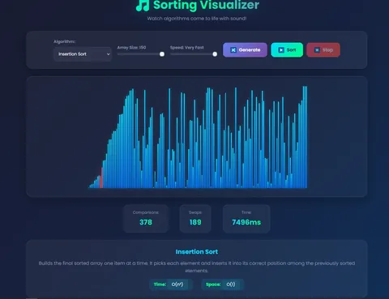
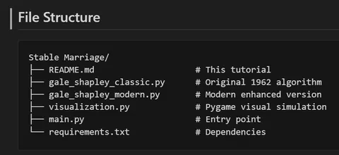
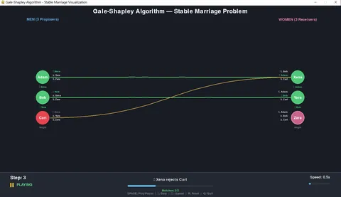

Using vibecoding to learn
Learn to safely use AI-driven "vibecoding" for learning, prototyping, and speeding up complex tasks while maintaining judgment
By Sukalyan RoyPublished Updated 9 min read

Most people dislike vibecoded software, but deep down all of them would not miss a beat to use it, if it meant they had to bother themselves less with a work task.
For better or most likely for worse in the long term, it is here to stay, with many companies either relaxing their no LLM policies or outright encouraging or mandating that Engineers should use AI to speed up shipping code.
To begin with, this clip although a few years old, shows what happens when you let these agents run wild without any supervision.
Vibecoding (for me) = letting an LLM generate working code faster than I can fully reason about it.
It’s not going away, so this post is about using it safely: as a hint engine, a prototyping tool, and a learning accelerator—without outsourcing your judgment.
TL;DR #
-
Vibecoding can be useful for learning if you treat the AI as a fast collaborator, not a replacement for understanding.
-
The danger is shipping code you cannot explain.
-
The useful version is asking for small steps, reading the diff, running it, and rewriting parts yourself.
-
If the model hides the hard part from you, it did not help you learn.
Learning status
This is my current stance on AI-assisted learning. I am not against using the tools. I am against outsourcing the exact struggle that teaches the concept.
What can we do? #
Since it has become quite an unavoidable part of our lives, let’s try to figure out a few ways we can put it to use without destroying everything.
For this, my go to thing is using AI generated code as a proxy for everything it has been trained on, somewhat like a hint engine.
Even though i try my best to minimize AI code in my internship, and completely forbid myself from copy pasting any AI code directly into personal projects, I still use it for hints on assignments on courses.
For generating template code to play around with; to generate extremely common standard projects that might not have any CV or long term learning value, but that might be cool to run locally and see for myself.
The uses are quite varied, so in this post I would like to summarize some of the things I’ve had generated using the Copilot in VS code.
Before we move on to them, always remember that if you take just one suggestion from this post, that should be “Always try to figure things out on your own, but never be stubborn against using AI to help you out if things get out of hand”.
The projects #
Sorting Visualizer #
What it is #
I’ve seen those sorting visualizer videos on youtube a lot, and always liked the weird sounds they made.
Coincidentally, I was also struggling with sorting algorithms back then, so thought, why not make something that will help me visualize stuff?
So, i built a very basic black and white with simple buttons sorting visualizer.
That got the job done for all the basic algos that I already knew how to implement like insertion, merge, bubble, selection etc.
What next? The basic functionality done, it would not help me at all in trying to work hard and make it look prettier, as I never intended to work on frontend things, so, I let AI do it.
All you see below, is from a single prompt: “Make it look prettier and add more sorting algorithms”, everything is just one html, one css and one JS file.

What i learned #
Now with this as a reference, I can visualize any algo that i want to learn in real time, change parameters and test the same data across different algorithms.
Then I can use that insight to learn them myself. This has even helped me teach someone else about Sorting Algorithms.
Gale-Shapley Algo #
What it is #
This was not in any of my DSA classes, i stumbled across this while going through the MIT OCW Discrete Math course. (Which I have since left incomplete cause I felt it was not that relevant to my work now).
The stable matching or stable marriage problem is one where, there are several suitors, traditionally called male and female but in practice can be anything, for example servers and clients making request to those servers.
Each of them have a preference order of who they like more than the others, 1st 2nd 3rd etc preferences.
We need to find the stable matching, which must follow the criteria that: Every Man and Woman must be paired with someone such that, there is no other better option left for them.
I had trouble visualizing this process based on static text in books, so I had AI generate a visual simulation for me, along with a document that serves as quite a decent tutorial for learning it for the first time, before i move on to other sources.
The Original 1962 algorithm is as:
Algorithm: Gale-Shapley (Men-Proposing)
─────────────────────────────────────────
Initialize:
All men and women are FREE
Each man has a preference list of women (not yet proposed to)
While there exists a FREE man m who hasn't proposed to all women:
1. m proposes to his highest-ranked woman w he hasn't proposed to yet
2. If w is FREE:
- (m, w) become ENGAGED
3. Else if w is ENGAGED to m':
- If w prefers m over m':
- (m, w) become ENGAGED
- m' becomes FREE
- Else:
- w rejects m
- m remains FREE
Return: The set of engaged pairs (this is a stable matching)But here, there are several real world constraints that we might want to consider:
-
Each Recipient can accept more than one proposers. (Like in College admissions)
-
The proposers do not have a complete preference list.
-
When there is a Tie in preferences
-
If one party lies. It is usually not optimal for the proposer to lie, but the receivers can benefit from lying.
-
Deferred Vs Immediate acceptance
-
and many more
So how do we deal with these modern considerations? What the AI did, was use knowledge from later papers to add changes to it.
The final directory had the original implementation, the modern implementation, and a pygame based GUI to animate it all.


The above is the visualization for the standard algo, and every step can be seen in real time in the terminal as well.
What i learned #
To be honest, compared to the other generations, this one was slightly less useful to me immediately, and it also took less prompts, the AI could do it directly.
Potential ways to learn from this would be the entire pygame setup for animations, and the different ways in which optimizations and modern enhancements were done. Will be useful when later I want to work on some non trivial pygame/simulation project.
Tournament Simulation in Java #
What it is #
Everyone knows about the infamous tournament simulator. It’s the go to project for any beginner trying to prove that they know Java, even still, most of the times it is copy pasted from github anyways.
We’d have a set of teams for a sport, with certain criteria for winning and losing, and based on that we match up teams at random in several rounds, leaving us with the winner at the end.
The project is supposed to teach us more about Java fundamentals like OOP and such, but to be very honest I felt this project to be useless for real learning at first. I made a very rudimentary version that might have been enough to show that i know something, but it was boring.
Here comes the AI, where, instead of randomly prompting it “Generate a tournament Sim for me in Java”, I wrote a detailed spec sheet first.
Here I need to describe what exactly are the different entities(objects) and their interactions(methods).
But before that, what sport do I even want to simulate?
- Cricket in IPL style: Group round with X number of matches per Team
everyone plays everyone else a certain number of times.
Then Semi finals with two matches A(Top two in the leaderboard) and B(3rd and 4th position)
Loser of B is eliminated, Winner of B matches with Loser of A in Match C
Finals happen with winner of A and C
For the group round, Every team plays with every other team twice so no seeding needed
(We assume the outcome of each Match is independent)
What will be the things that I will keep track of?
- Wins, loses, ties and Team Run Rate
What are the Basic units?
- Teams(Wins, Loses, Ties, Run Rate, Team Attributes)
- Matches (Team A, Team B, Stage)
What will be the win or lose condition?
- That is, how do i decide the numbers once the teams are paired up for a match
- There should be some way to tie up the Team attributes to a RNG to generate the match outcome
- All the updating logic will be done by the Matches class which will return the win/lose/tie outcome of the match
and also the runs scored by each team.
- To simplify things, we will only have the "Won by X" runs criteria based on the RNG
outputs. We don't need to check who batted first or whether it was a win by X wickets or not
- Then the run rate of each team must be updated after each match
- Is there any game theory logic that I can add?
- Only results are calculated so no In match events
Data management?
- All the team data will be fetched from a file called Teams.txt
in the form of Name, Team attributes
- Store everything about all the matches in Matches.log
- The group stage leaderboard is shown once it's over
- Only the Semifinal and final matches are printed in the console one by one
- Last output will be the winner.
- Everything displayed in the console will go to the results.log file
- The game will run from the terminal where the Teams.txt file is passed as an argument
Nice to haves:
- Concurrent Match simulations
- Complete Unit testing usint Junit and MockitoWhich was then fed into the AI to generate an even better more structured Spec sheet, in which i made several changes in the specifics, at the end of which we get:
How to run:
# Tournament Simulator Specification (NewSpecs)
## 1. Purpose
This document defines the requirements, design, and constraints for a Java-based IPL-style cricket tournament simulator. It provides a blueprint for implementing group stages, semifinals, finals, match simulation, data management, and logging.
## 2. Scope & Assumptions
1. In-scope:
- IPL format: double round-robin group stage, two semifinals (A & B), Match C (loser A vs winner B), final.
- Abstract match outcomes ("won by X runs").
- Console/CLI interface only; flat-file persistence (no database).
2. Out-of-scope:
- Detailed in-match events (batting order, wickets).
- GUI or web interface.
- External persistence beyond CSV/flat files.
- More complex game theoretic logic instead of RNG
3. Constraints:
- Maximum teams: 10 by default (configurable).
- Teams data from `Teams.txt` (CSV).
- Results/logs written to `results.log` and `matches.log`.
## 3. Entities & Data Models
| Class | Fields | Methods |
|-------------|----------------------------------------------------------|--------------------------------------------|
| **Team** | `name:String`, `wins:int`, `losses:int`, `ties:int`, `runRate:double`, `attributes:Map<String,Double>` | `updateStats(int runsFor, int runsAgainst)`, `computeRunRate()`, `toString()` |
| **Match** | `teamA:Team`, `teamB:Team`, `stage:StageEnum`, `runsA:int`, `runsB:int`, `winner:Team?` | `play(Random rng):MatchResult`, `logResult()` |
| **Tournament** | `teams:List<Team>`, `matches:List<Match>`, `leaderboard:List<Team>` | `loadTeams(File)`, `runGroupStage()`, `runKnockouts()`, `printResults()` |
| **StageEnum** | `GROUP`, `SEMIFINAL_A`, `SEMIFINAL_B`, `MATCH_C`, `FINAL` | N/A |
## 4. Match Simulation Logic
1. RNG Strategy:
- Use Java `Random` or `ThreadLocalRandom`.
- Weight runs by team batting strength attribute.
2. Run generation:
double base = rng.nextDouble() * (teamA.attr("batting") + teamB.attr("bowling"));
int runsA = (int)Math.round(base);
int runsB = (int)Math.round(rng.nextDouble() * maxRuns);
3. Outcome:
- Compare `runsA` vs `runsB`. Record "won by X runs".
- Tie if equal.
4. Update:
- `team.updateStats(runsFor, runsAgainst)` updates wins/losses/ties and recalc run rate.
## 5. Tournament Flow
1. **Group Stage:**
- Each pair of teams plays twice (nested loops).
- Record all results, update stats.
- Sort leaderboard by points (win=2, tie=1), then run rate.
2. **Semifinals:**
- A: positions 1 vs 2.
- B: positions 3 vs 4.
3. **Match C:**
- Loser of A vs Winner of B.
4. **Final:**
- Winner of A vs Winner of C.
5. Tie-breaker:
- Higher run rate.
## 6. Input/Output & Logging
1. **Teams.txt** (CSV):
name,batting,bowling,fielding
Mumbai Indians,8.5,7.2,6.9
Royal Challengers,7.9,7.4,7.1
2. **CLI Usage:**
java -jar tournament.jar --teams Teams.txt --out results.log
3. **Logging:**
- Use SLF4J + Logback.
- All console output redirected to `results.log`.
- Detailed match entries in `matches.log`.
4. **Sample `matches.log`:**
[GROUP] MI vs RCB: won by 15 runs (150 vs 135)
[SEMIFINAL_A] CSK vs MI: won by 5 runs (145 vs 140)
## 7. Error Handling & Validation
- Validate CSV format and numeric ranges; exit code `1` on error.
- Catch I/O exceptions on file read/write; log error and exit code `2`.
- Report mismatched team count if <4 or odd number.
## 8. Concurrency (Nice-to-Have)
- Parallelize group matches using `ExecutorService`.
- Use thread-safe structures (e.g. `ConcurrentHashMap`) or synchronize `updateStats`.
- Limit pool size to available processors.
## 9. Testing Strategy
1. **Unit Tests (JUnit):**
- `TeamTest`, `MatchTest`, `TournamentTest`.
- Test run-rate calc, leaderboard sorting, flow branching.
2. **Mocks (Mockito):**
- Mock `Random` for deterministic outcomes.
- Mock file I/O to test error handling.
3. **Property Tests:**
- Randomized tests for statistical properties (e.g. average runs within expected window).
## 10. Deliverables & Timeline
Version 1: Implements everything in the spec except out of scopes and Concurrency
Version 2: Implements Concurrency
Version 3: Implements all the out of scope features.
## Learnings
The important thing that i've realized after the multithreaded version didn't work much faster,
is that if we are logging to a file, or reading stuff from a file, it doesn't matter how many threads you
spawn, it will always get bottlenecked at Disk IO. So for my purposes, Single threaded solution is fine, which
is i think version 3.
And I gotta study Version 2 to understand the basics of multithreading in Java, but it is
not beneficial for this given project.All this word salad later, just three prompts for the three versions and Voila, we have different levels of functionality.
The entire thing is very detailed and the matches tabs contains very specific events logged.
What i learned #
Firstly, that this is much cooler than any Tournament Sim projects i have seen so far, if someone wanted to, they could attach this match log data into a pretty awesome looking Animation.
On reading through the code, i saw several different features of Java that i would never have used on my own accord, but now i might.
This serves as a runnable example for testing and logging frameworks, Swing GUIs, OOP principles and so much more.
Realistically I don’t see myself working in Java anytime soon, but whenever I’ll need a refresher, this would be a lot better than the same old Patterns and draw a box tutorials that are out there.
For a more major, and personally usable project, this will be the revision before I start working on it.
IronHand #
What it is #
The whole mediapipe with openCV gesture control thing has spread all over linkedin like cancer. At this point there is very little value in making it anyways, and most people posting about it are certainly copy pasting from Github anyways.
What might have been a more useful spin on it? Using the gestures to actually control something, rather than just drawing shapes on the screen. I thought about this while watching an Avengers movie and suddenly realized that’s pretty much what the whole Ironman holographic interface is.
So, I had the AI made it, and out of everything else i have mentioned here, this took the most trial and error even for the best model i had access to.
The overall framework and basics were covered with a single prompt, but then it took a few more to really tune the behavior with proper parameter definitions.
But that’s where it all broke down, the window controls were not working properly, and the parameters were not getting properly set no matter how many prompts I provided, so ii had to go old school on it.
Manual testing, parameter tuning, manually changing the libraries, completely rewriting the gestures themselves etc, and a few hours later, I had the best version of it i could possibly have.
What i learned #
This is not a fun way to replace the mouse. Not sure how Tony Stark did it so casually, but in my experience the whole setup was too jittery.
To deal with camera bandwidth and latency, I dropped the resolution down to 720p with 60fps recording.
Then tuned the smoothness parameters in several different ways, which made the thing finally usable.
I spent nearly a whole day using my gestures instead of the mouse, and my hands got really sore.
An alternative arrangement would be instead of a front facing camera, we hand a camera from the ceiling and rest the hands on the desk, but if we’re going that far anyways then a mouse is good enough, and there are other non AI options already available that work well.
My Final Opinion on this #
These show a few different ways i have used AI to generate code, each taking a different level of prompting and manual fixing effort, leading to a different final complexity of the project.
A checklist for making good use of it would be:
-
Use AI for: scaffolding, API exploration, test generation, quick prototypes, visualizations.
-
Don’t use AI for: security-sensitive code, unclear requirements, anything you can’t explain back.
-
Always do: run tests, add logging, read diffs, ask “what would break?”, add constraints to prompts.
| Bad use | Better use |
|---|---|
| "Build the whole app for me" | "Help me implement this one function, then explain the tradeoffs" |
| Accepting code because it runs once | Reading the diff and testing edge cases |
| Asking broad vague prompts | Giving the current file, error, and goal |
| Skipping concepts | Asking for the concept, then coding it yourself |
I’d say that AI is pretty useful, and almost an inseparable part of our lives, but it is essential that we teach ourselves enough to be able to discern when it is giving us nonsense.
If you’d like a post on good Prompt Engineering Practices, do comment, i’ll write it up soon.